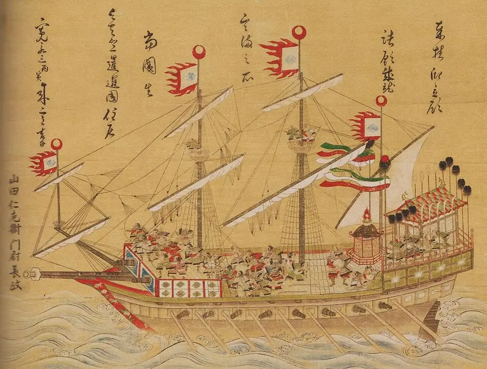
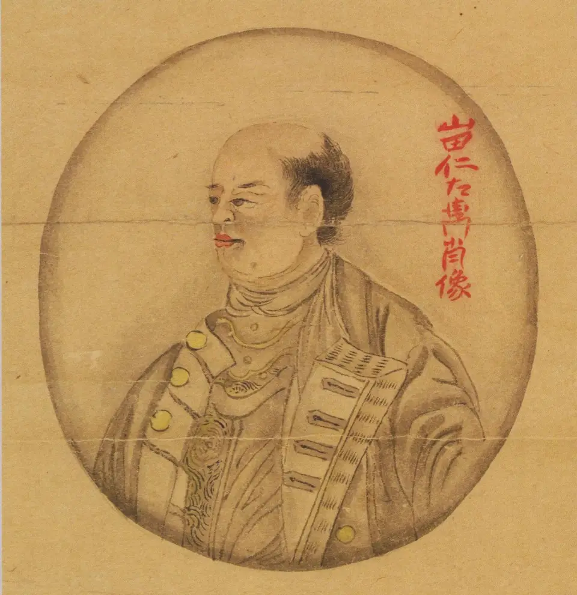
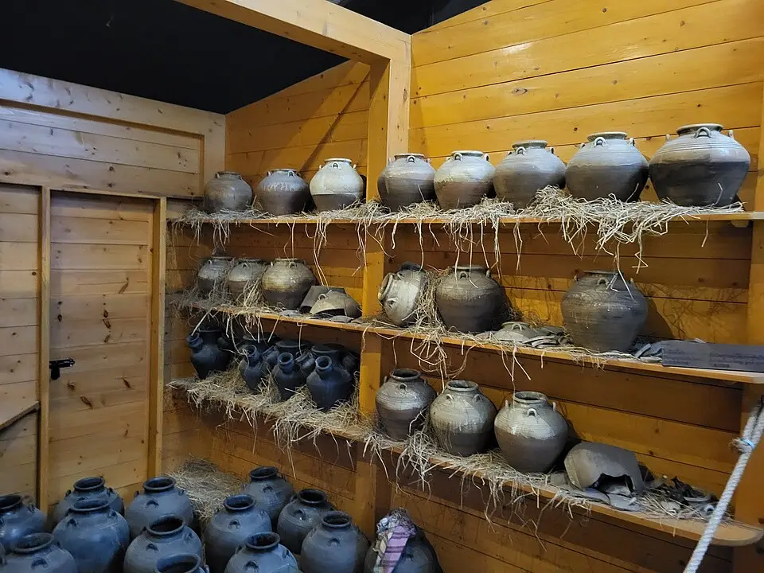
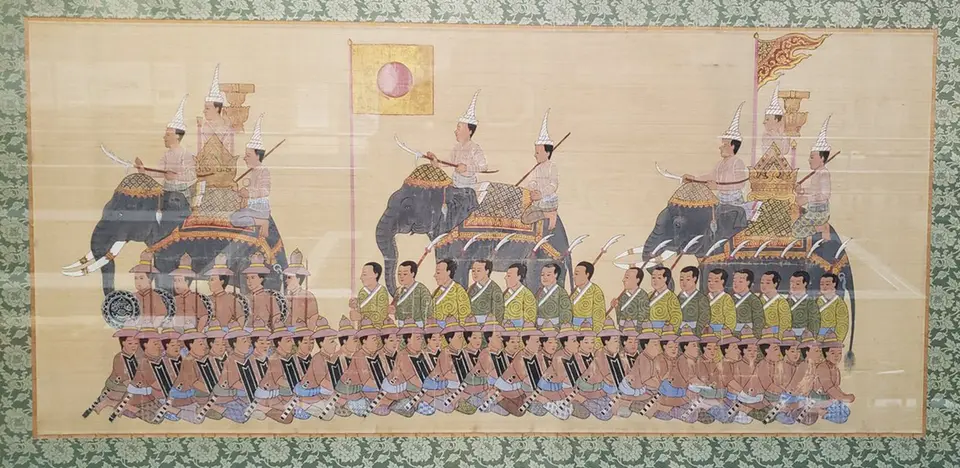

Yamada Nagamasa: người khiêng kiệu Nhật thành quý tộc Xiêm
Đầu thế kỷ 17, ở kinh đô Ayutthaya có một làng Nhật khoảng 1.000 người: thương nhân, người theo đạo Kitô bỏ trốn, và samurai thất thế. Người đứng đầu làng, Yamada Nagamasa, từng chỉ là người khiêng kiệu, rồi lên tới hàng quý tộc cao nhất của Xiêm.

Năm 1626, một thương nhân từ Xiêm dâng lên một ngôi đền ở quê nhà Shizuoka một bức tranh. Tranh vẽ chiến thuyền của ông: buồm kiểu phương Tây, 18 khẩu đại bác, thủy thủ mặc giáp samurai. Bức gốc đã cháy, nhưng bản sao vẫn còn. Người dâng tranh là Yamada Nagamasa, và đời ông cho thấy Đông Nam Á thế kỷ 17 rộng mở hơn ta tưởng.
Người khiêng kiệu ở Numazu
Yamada sinh năm 1590 ở Numazu, nay thuộc tỉnh Shizuoka. Tương truyền ông từng khiêng kiệu cho lãnh chúa địa phương. Đó là thời của "thuyền châu ấn": thuyền buôn Nhật được Mạc phủ cấp giấy phép đóng dấu son để đi buôn khắp Đông Nam Á, kể cả Hội An. Khoảng năm 1612, Yamada theo dòng người ấy sang vương quốc Ayutthaya. Ở đó, ông không phải người Nhật duy nhất.
Làng Nhật ở Ayutthaya


Ở Ayutthaya có Ban Yipun, nghĩa là "làng Nhật", khoảng 1.000 người. Có thương nhân. Có người theo đạo Kitô chạy trốn các cuộc cấm đạo của Toyotomi Hideyoshi và Tokugawa Ieyasu: linh mục António Francisco Cardim kể đã làm lễ cho khoảng 400 giáo dân Nhật ở đây năm 1627. Và có rōnin, những samurai không còn chủ sau trận Sekigahara năm 1600 hay cuộc vây thành Osaka năm 1614 đến 1615.
Làng buôn da hươu sang Nhật, đổi lấy bạc, kiếm, đồ sơn mài và giấy tốt. Người Hà Lan than phiền rằng người Nhật cạnh tranh với độc quyền của Công ty Đông Ấn Hà Lan. Còn vua Xiêm quý làng vì một lý do khác: những người lính dày dạn trận mạc. Họ được xếp thành một đội quân riêng, "Cục quân tình nguyện Nhật". Trong đội quân ấy, Yamada sẽ leo lên rất cao.
Trong khoảng 15 năm, Yamada đi từ tước Khun, bậc thấp trong hàng quý tộc Xiêm, lên tới Okya, bậc cao nhất
Từ Khun lên Okya


Trong khoảng 15 năm, Yamada đi từ tước Khun, bậc thấp trong hàng quý tộc Xiêm, lên tới Okya, bậc cao nhất, với danh hiệu Okya Senaphimuk. Ông làm trưởng làng Nhật từ năm 1617 và đem quân Nhật, giương cờ Nhật, đánh trận cho vua Songtham.
Người Hà Lan cũng phải nể ông. Năm 1628, một tàu chở gạo của ông từ Ayutthaya đi Malacca bị chiến thuyền Hà Lan bắt giữ. Khi biết tàu là của Yamada, người được vua Xiêm trọng vọng, họ thả ngay để tránh rắc rối ngoại giao, rồi còn mời ông buôn bán với Batavia. Nhưng sự trọng vọng ấy gắn với một vị vua, và vị vua ấy rồi cũng mất.
Lãnh chúa Ligor và chén thuốc độc


Sau khi vua Songtham mất, quan đại thần Prasat Thong đứng sau ngai vàng, giết lần lượt hai người con của vua cũ, rồi tự lên ngôi. Yamada, người trung thành với dòng vua cũ, là một mối nguy. Năm 1630, ông được cử xuống làm thống đốc Ligor, nay là Nakhon Si Thammarat trên bán đảo Mã Lai, cùng khoảng 300 samurai. Đó vừa là thăng chức, vừa là đưa ông ra xa kinh đô.
Cũng năm 1630, Yamada bị đầu độc. Các nguồn cho rằng Prasat Thong đứng sau. Sau đó, quân Xiêm tấn công và đốt phá làng Nhật ở Ayutthaya. Nhiều người chạy sang đất Khmer. Vài năm sau, vài trăm người quay về dựng lại làng, nhưng thời hoàng kim đã qua. Từ năm 1635, Mạc phủ cấm người Nhật ra nước ngoài, con đường thuyền châu ấn khép lại. Từ một cuộc đời như vậy, chuyện kể dễ lấn át sự thật.
Huyền thoại và bằng chứng
Đời Yamada sinh ra nhiều chuyện kể. Có chuyện nói ông từng làm hải tặc cướp tàu Hà Lan quanh Batavia. Có chuyện nói ông chôn kho báu trên đảo Magnetic ngoài khơi nước Úc, điều mà giới nghiên cứu cho là gần như không thể. Phần chắc chắn hơn nằm trong ghi chép của người Hà Lan và người Xiêm: một làng Nhật có thật, một viên tướng Nhật mang tước Okya có thật.
Ngày nay, nơi từng là làng Nhật ở Ayutthaya có một khu tưởng niệm. Đời Yamada cho thấy ở Đông Nam Á thế kỷ 17, một người Nhật có thể vừa là lính đánh thuê, vừa là thương nhân, vừa là quý tộc Xiêm.